koaladata <- Read10X(data.dir = "../../scRNA-seq/Koala/")
koala <- CreateSeuratObject(counts = koaladata, project = "koala",
min.cells = 3, min.features = 200)Introduction
In this data analysis exercise, I analyze a mysterious 10x single-cell RNA-seq data file, which consists of a collection of single cells from an unknown tissue with unknown cell types. This is standard 10x mouse single cell RNA-seq data output and we are curious what type of tissue and cells these are.
Objectives
- Quality control and filtering. Perform a basic QC of the data, explaining the rationale behind each step and the choice of parameters. How do the data look? What would you examine before moving forward to downstream analysis? Why?
- Dimension reduction and visualization. How can we make sense of all this data? Perform dimensional reduction with any methods at your choice, explaining the rationale behind the choice and caveats of other potential dimensional reduction methods. Plot these out in a suitable visualization(s).
- Marker genes, clusters tissue, and cell types. Identify genes and gene-sets that define the tissue and are differentially expressed. What tissue are we looking at? How many cell types are present, and what kind?
Cell states can be very dynamic within the same cell type. For some of the most abundant cell types, feel free to dig deeper on any observed heterogeneity and the biological underpinning.
Data description
- counts: matrix
matrix.mtx.gz - cell barcodes:
barcodes.tsv.gz - gene features:
features.tsv.gz
Load data
The following parameters are used: - min.cells = 3: a feature must have appeared in at least 3 cell barcodes - min.features = 200 a cell must have at least 200 features to be included
Data QC
Here are some features in the metadata we can use for QC:
koala@meta.data %>% colnames()[1] "orig.ident" "nCount_RNA" "nFeature_RNA"Unfortunately, a “percent.mt” vector is not available. I ordinarily would heavily QC on this information.
Features
VlnPlot(koala, features = c("nCount_RNA", "nFeature_RNA"), pt.size = .1) +
geom_hline(yintercept = 1100) +
geom_hline(yintercept = 2000, linetype = "dashed")Warning: Default search for "data" layer in "RNA" assay yielded no results;
utilizing "counts" layer instead.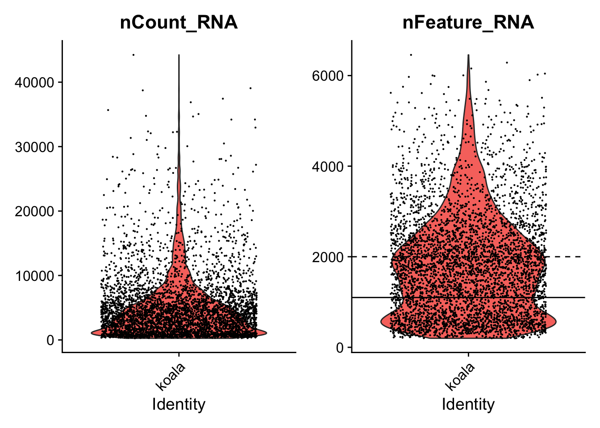
koala@meta.data$nCount_RNA %>%
as_tibble() %>%
ggplot(aes(x = "koala", y = value)) +
geom_violin(fill = "pink") + geom_jitter(size = 0.2, alpha = 0.5) +
labs(y = "nCount_RNA") +
theme_bw()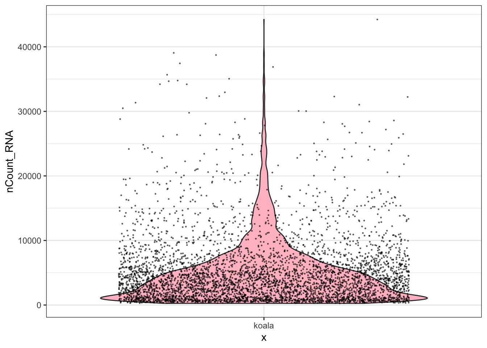
These are both skewed distributions, but RNA counts is more extremely skewed than features. Let’s see how they scatter:
features_by_counts_scatter_table <- bind_rows(koala$nCount_RNA, koala$nFeature_RNA) %>%
t() %>%
as_tibble() %>%
dplyr::rename("nCount_RNA" = 1, "nFeature_RNA" = 2)
features_by_counts_scatter <- FeatureScatter(
koala, feature1 = "nCount_RNA", feature2 = "nFeature_RNA") #+
# stat_smooth(formula = "y ~ x*log(x)", method = glm) +
# stat_smooth(formula = "y ~ log(x)", method = glm, color = "yellow") +
# geom_smooth(formula = y ~ (Vm * x)/(K + x),
# #data = features_by_counts_scatter_table,
# method = "nls", color = "green", se = FALSE,
# method.args = list(start = c(K = 10000, Vm = 6000)))
features_by_counts_scatter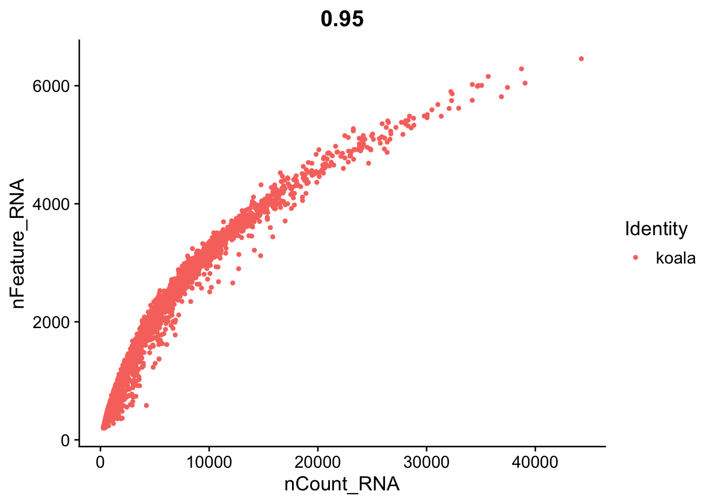
features_by_counts_scatter + scale_x_log10() + scale_y_log10()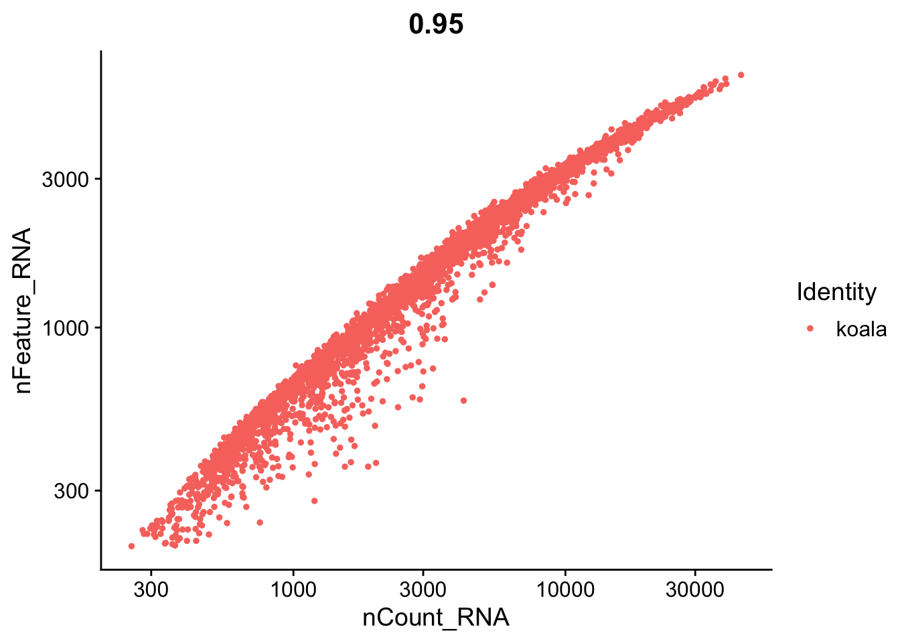
The feature count appears to increase approximately logarithmicly with RNA count. The Pearson correlation is 0.95, but the non linearity indicates the relationship may be stronger than the correlation coefficient indicates. This observation is consistent with an RNA-seq experiment wherein there is a fixed number of potentially expressed RNAs and the number of detected transcripts begins to saturate the and approach the maximum number able to be detected.
The log-log transformed axis plot shows: - There are only a few cells/droplets with fewer than 300 RNA counts, which is great for an scRNA-seq experiment. - There is still some curve to the line, meaning the relationship is more trancendental (not simply a power-law, like polynomial).
Filter on feature count
I am going to keep droplets (“cells”) with 1100 features or fewer
koala_filtered <- subset(koala, nFeature_RNA <= 1100)Let’s quickly confirm that the filtering changed the number of features throughout the Seurat object by using Seurat size commands to query the number of observations in the pre-filter and post-filter Seurat objects:
length(koala$orig.ident); length(koala_filtered$orig.ident)[1] 4449[1] 1410The feature count decreased from 4449 to 1410 upon filtering.
(The orig.ident matrix within the Seurat object stores the cell metadata, and counting its number of entries can tell us number of unique observations.)
head(koala_filtered$orig.ident)ATGGCTGTCGATTTGA-1 GGTACAAAGTTCCTGC-1 ATTCAACCATAGGCGA-1 TCTCCTCGTCAATACG-1
koala koala koala koala
TTTCTCACAGCACCAT-1 TTCCTTGAGGATCACT-1
koala koala
Levels: koalaFeatures
VlnPlot(koala_filtered, features = c("nCount_RNA", "nFeature_RNA"), pt.size = .1)Warning: Default search for "data" layer in "RNA" assay yielded no results;
utilizing "counts" layer instead.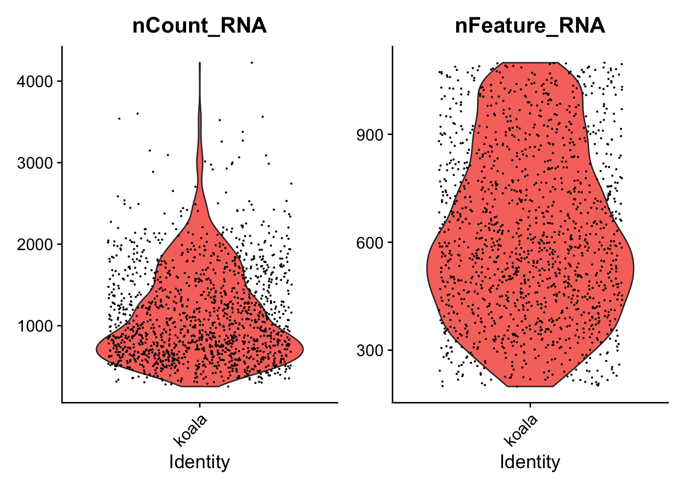
Post filtering, the RNA count plot looks more typical, with one major “peak” and a long tail. The features plot looks fairly evenly distributed because of the filtering cut off so close to the “peak” of the distribution, but I hypothesize it was necessary due to the hypothesized doublet peak right at 2000 features per droplet right near by.
features_by_counts_scatter_table <- bind_rows(koala_filtered$nCount_RNA,
koala_filtered$nFeature_RNA) %>%
t() %>%
as_tibble() %>%
dplyr::rename("nCount_RNA" = 1, "nFeature_RNA" = 2)
features_by_counts_scatter <- FeatureScatter(
koala_filtered, feature1 = "nCount_RNA", feature2 = "nFeature_RNA") #+
# stat_smooth(formula = "y ~ x*log(x)", method = glm) +
# stat_smooth(formula = "y ~ log(x)", method = glm, color = "yellow") +
# geom_smooth(formula = y ~ (Vm * x)/(K + x),
# #data = features_by_counts_scatter_table,
# method = "nls", color = "green", se = FALSE,
# method.args = list(start = c(K = 10000, Vm = 6000)))
features_by_counts_scatter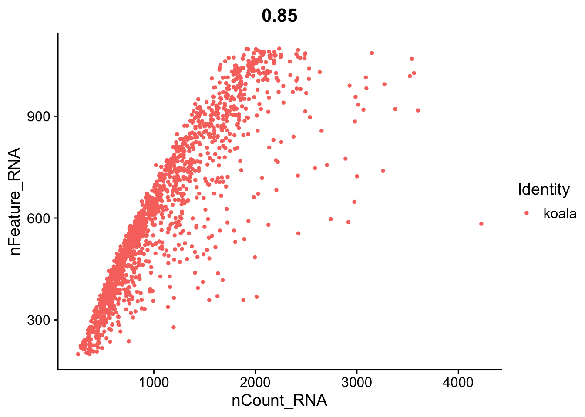
Initial Analysis
Normalization
koala_norm <- NormalizeData(koala_filtered)Normalizing layer: countsThe above is a log-normalization. This procedure divides each feature’s abundance by the sample mean for that cell and takes the natural log (log() in R).
koala_features <- FindVariableFeatures(koala_norm, selection.method = "vst")Finding variable features for layer countsThe vst method is the default feature selection method, but I’m just making it explicit, because a later (cluster identification) package refers to this fact. The variance stabilizing transformation makes the variances (standard deviations) more uniform and stops them from being related to the mean value within a group, which facilitates downstream linear regression-based techniques (e.g. PCA).
Feature Selection by PCA
top_koala_features <- head(VariableFeatures(koala_features), 10)
top_koala_features_plot <- VariableFeaturePlot(koala_features) %>%
LabelPoints(points = top_koala_features, repel = TRUE)
top_koala_features_plotWarning: Transformation introduced infinite values in continuous x-axis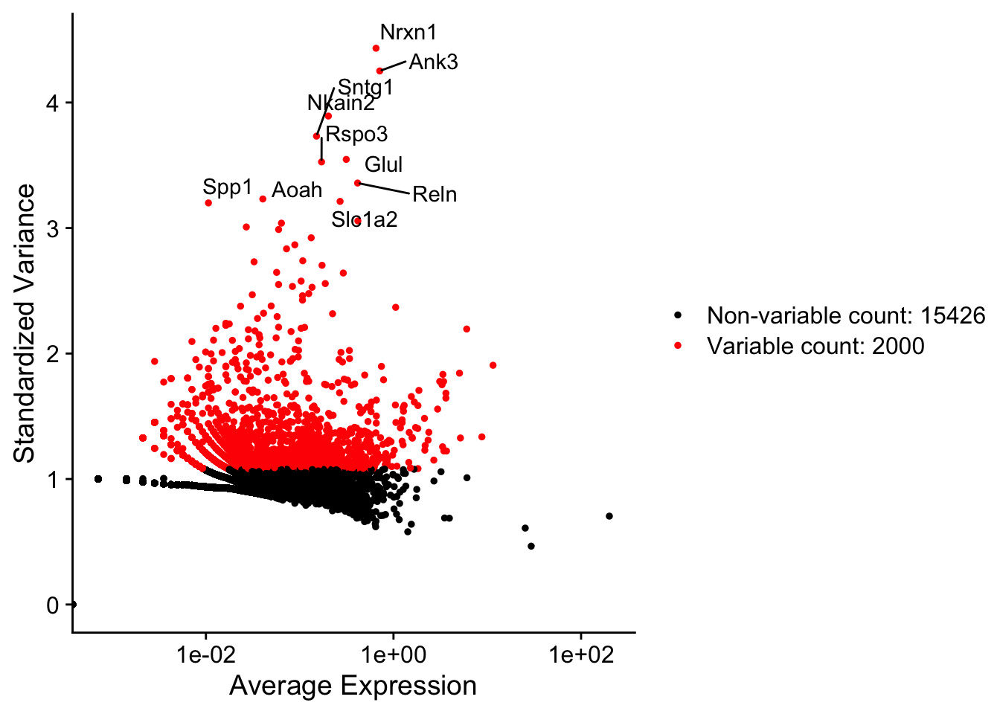
top_koala_features [1] "Nrxn1" "Ank3" "Nkain2" "Sntg1" "Glul" "Rspo3" "Reln" "Aoah"
[9] "Slc1a2" "Spp1" The most highly expressed gene is MEG3 (maternally expressed 3), a maternally expressed, imprinted long non-coding RNA (lncRNA). This likely means the tissue analyzed here is an egg cell, recently fertilized egg, or young embryo.
Scale
Pre-process to center at 0 and make sd = 1 prior to PCA.
gene_names <- rownames(koala_features)
koala_features <- ScaleData(koala_features, features = gene_names)Centering and scaling data matrixRun PCA
Linear dimensionality reduction
I’m going to go with all features and use the Elbow plot to determine which features are still important after this step.
koala_pca <- RunPCA(koala_features, features = VariableFeatures(koala_features) )Visualize PCA Results
print(koala_pca[["pca"]], dims = 1:4)PC_ 1
Positive: Ptprb, Lrmda, Prkg1, Plekhg1, Cemip2, Plpp1, Rasal2, Meis2, Plxnc1, Adam23
Sptbn1, Stox2, Ets1, Mrc1, F8, Fyn, Syne1, Hecw2, Slc9a9, Fbxl7
Negative: Pck1, Ppara, Ttc39c, Gm29966, G6pc, Abcc2, Mlxipl, Errfi1, Egfr, Gfra1
Ahsg, Neat1, Trf, Slc27a2, Fam214a, Slc38a3, Slc7a2, Dpyd, Hc, Alas1
PC_ 2
Positive: Nrxn1, Reln, Rbms3, Dcn, Ntm, Bmp5, Lhfp, Abcc9, Arhgap24, Nkain2
Pde3a, Tln2, Ngf, Sox5, Pde1a, Robo2, Hand2os1, Hgf, Ccbe1, Agtr1a
Negative: Ptprb, Rasal2, Cemip2, Plpp1, Adam23, Stox2, Fyn, Mrc1, Kdr, F8
Prickle1, Dab2, Adgrf5, Cyyr1, Plcb4, Hecw2, Maf, Arhgap31, Nrp1, Cd55
PC_ 3
Positive: Slc8a1, Elmo1, Ptprc, Runx1, Cd5l, Clec4f, Dock2, Adgb, Entpd1, Dock10
Aoah, Gm26740, Bank1, Adgre1, Arhgap15, Ikzf1, E230029C05Rik, Epsti1, Adgre4, Cd163
Negative: Ptprb, Plekhg1, Cemip2, Meis2, Tshz2, Prkg1, Pard3b, Plpp1, Adgrl2, Plxnc1
Stox2, Rasal2, F8, Prickle1, Kdr, Hecw2, Fbxl7, Sptbn1, Adam23, Syne1
PC_ 4
Positive: Gm2682, Skap1, Themis, Cd226, Satb1, Kcnq5, Ms4a4b, Grap2, Dock2, Arhgap15
Bcl11b, Ripor2, Inpp4b, Ipcef1, Il7r, Atp8a2, Lef1, Camk4, Cyfip2, Ikzf3
Negative: Clec4f, Slc8a1, Frmd4b, Aoah, Slc40a1, Cd5l, Tcf7l2, Kcnk13, Tbxas1, Adgb
Myo9a, Hdac9, Entpd1, Pde7b, Cd86, Adgre1, Lgmn, Ksr2, Zeb2, E230029C05Rik Quick print out all of the positive and negative features in the top four fitted principle components.
(dim_reduc_plot <- VizDimLoadings(koala_pca, dims = 1:4, reduction = "pca") &
theme(axis.text.y = element_text(size = 5)))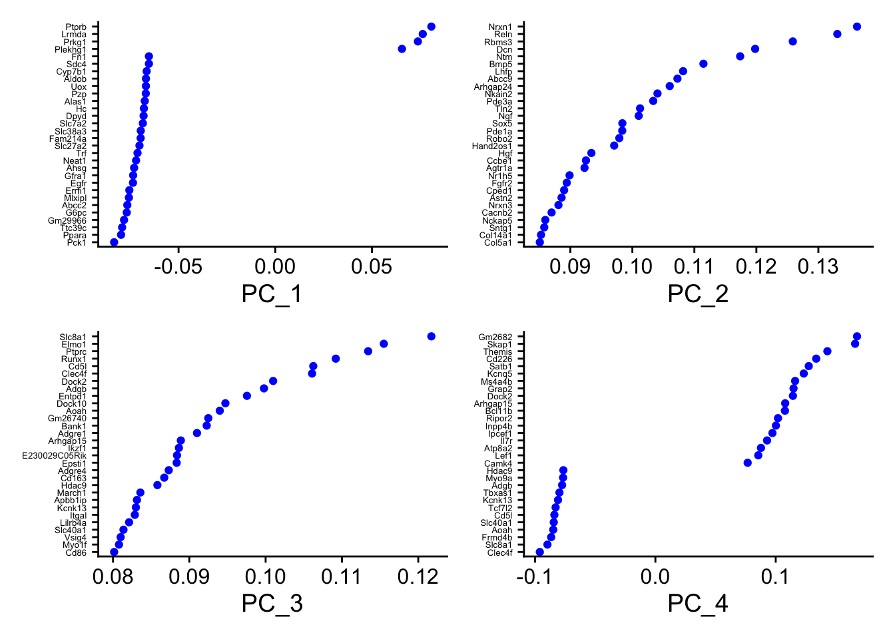
(pc_1_2_scatterplot <- DimPlot(koala_pca, reduction = "pca"))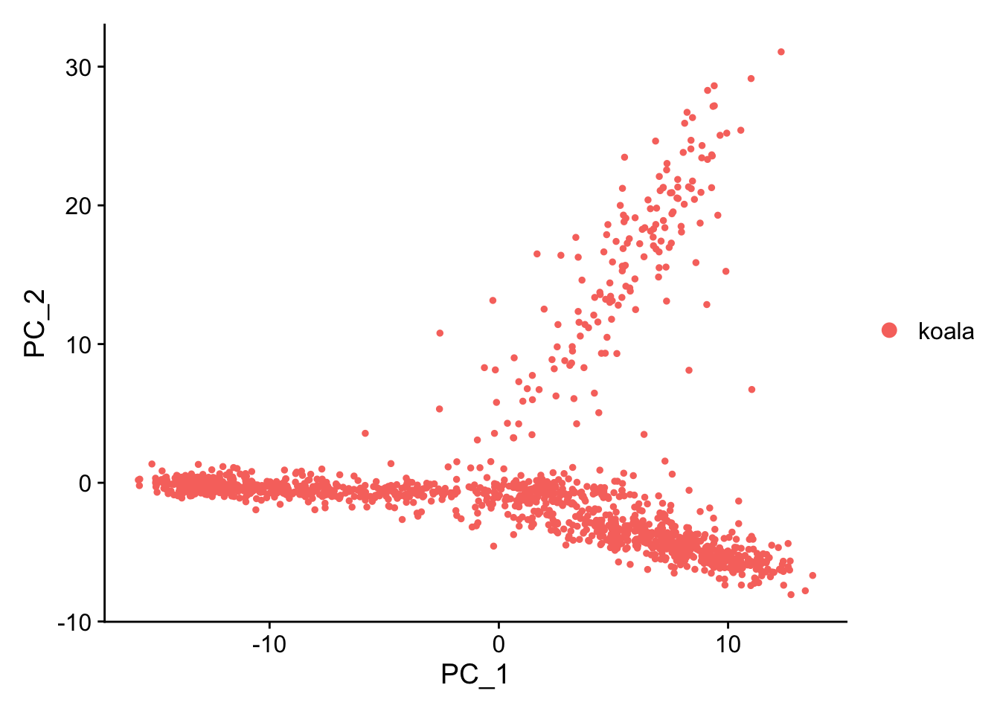
DimHeatmap(koala_pca, dims = 1:15)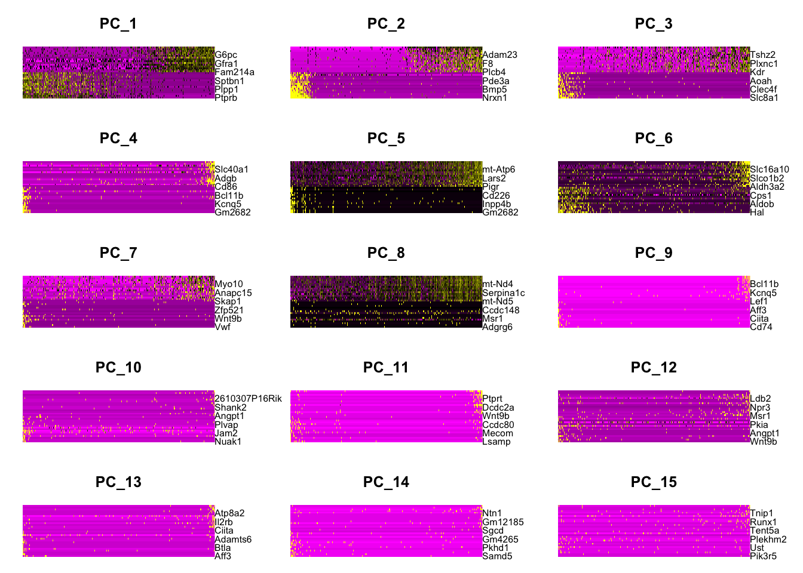
Determine the dimensionality of the dataset
Using jackstraw
koala_js <- JackStraw(koala_pca, num.replicate = 100)koala_js_score <- ScoreJackStraw(koala_js, dims = 1:20)JackStrawPlot(koala_js_score, dims = 1:20)Warning: Removed 28212 rows containing missing values (`geom_point()`).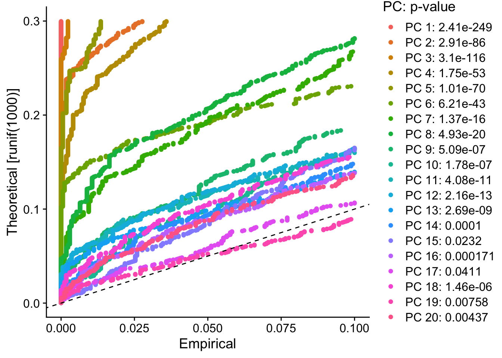
ElbowPlot(koala_js_score)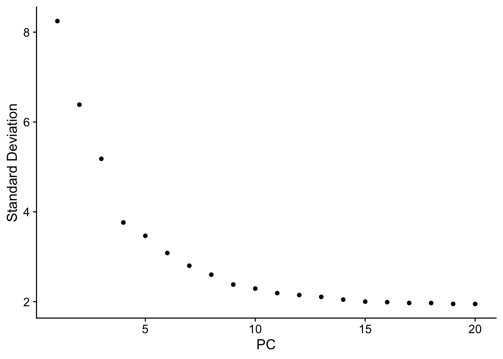
Deciding that the elbow occurs at 9 principle components, so should retain dimensions 1 to 10. However, due to the strange behavior of this dataset, I am going to run FindClusters() on all 20 principle components and see what happens. It may confirm my findings without intervention.
Clustering
koala_clusters <- FindNeighbors(koala_pca, dims = 1:20)Computing nearest neighbor graphComputing SNNkoala_clusters <- FindClusters(koala_clusters, resolution = 0.5)Modularity Optimizer version 1.3.0 by Ludo Waltman and Nees Jan van Eck
Number of nodes: 1410
Number of edges: 53206
Running Louvain algorithm...
Maximum modularity in 10 random starts: 0.8554
Number of communities: 9
Elapsed time: 0 secondsDespite retaining 20 dimensions in PCA, the Louvain cluster determination algorithm only identified 9 independently-clustering communities of droplets/cells. This is consistent with my by-eye reading of the elbow plot.
Run non-linear dimensional reduction (UMAP/tSNE)
koala_umap <- RunUMAP(koala_clusters, dims = 1:10)Warning: The default method for RunUMAP has changed from calling Python UMAP via reticulate to the R-native UWOT using the cosine metric
To use Python UMAP via reticulate, set umap.method to 'umap-learn' and metric to 'correlation'
This message will be shown once per session23:49:50 UMAP embedding parameters a = 0.9922 b = 1.112Found more than one class "dist" in cache; using the first, from namespace 'spam'Also defined by 'BiocGenerics'23:49:50 Read 1410 rows and found 10 numeric columns23:49:50 Using Annoy for neighbor search, n_neighbors = 30Found more than one class "dist" in cache; using the first, from namespace 'spam'Also defined by 'BiocGenerics'23:49:50 Building Annoy index with metric = cosine, n_trees = 500% 10 20 30 40 50 60 70 80 90 100%[----|----|----|----|----|----|----|----|----|----|**************************************************|
23:49:50 Writing NN index file to temp file /var/folders/11/sfzn5hhx2995d534f55tvzd40000gn/T//RtmpGrv29G/file1d6c46cda1fd
23:49:50 Searching Annoy index using 1 thread, search_k = 3000
23:49:50 Annoy recall = 100%
23:49:51 Commencing smooth kNN distance calibration using 1 thread with target n_neighbors = 30
23:49:51 Initializing from normalized Laplacian + noise (using RSpectra)
23:49:51 Commencing optimization for 500 epochs, with 55346 positive edges
23:49:52 Optimization finished(koala_umap_plot <- DimPlot(koala_umap, reduction = 'umap'))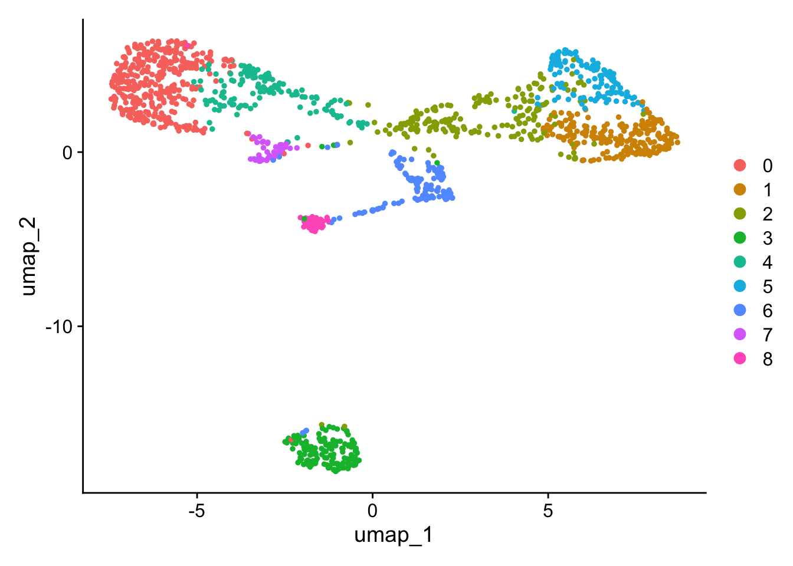
Identify cluster biomarkers
Cluster 3
koala_umap_cluster_4 <- FindMarkers(koala_umap, ident.1 = 4, min.pct = 0.25)
head(koala_umap_cluster_4, n = 10) p_val avg_log2FC pct.1 pct.2 p_val_adj
mt-Co2 7.527182e-31 1.2245951 0.985 0.670 1.311687e-26
Malat1 1.723282e-29 -0.7632667 1.000 0.999 3.002992e-25
mt-Co1 5.977587e-27 1.1122765 0.971 0.790 1.041654e-22
Gm42418 3.151082e-26 0.5404391 1.000 1.000 5.491075e-22
Camk1d 3.573460e-26 0.8369697 0.993 0.950 6.227112e-22
Cmss1 5.424007e-26 0.8626727 0.993 0.932 9.451874e-22
Apoe 6.872890e-26 1.2087947 0.919 0.635 1.197670e-21
mt-Nd2 8.808615e-25 1.2449740 0.897 0.524 1.534989e-20
Stab2 1.176373e-24 0.8467994 0.875 0.327 2.049947e-20
mt-Atp6 1.815371e-24 1.1416188 0.949 0.667 3.163465e-20# find all markers distinguishing cluster 5 from clusters 0 through 3
koala_umap_cluster_4_diff <- FindMarkers(koala_umap, ident.1 = 4, ident.2 = 0:3, min.pct = 0.25)
head(koala_umap_cluster_4_diff, n = 10) p_val avg_log2FC pct.1 pct.2 p_val_adj
mt-Co2 9.312486e-27 1.1041138 0.985 0.678 1.622794e-22
Malat1 2.704755e-26 -0.7462688 1.000 0.999 4.713307e-22
Gm42418 3.811073e-26 0.5477534 1.000 1.000 6.641176e-22
Camk1d 1.292259e-25 0.8488007 0.993 0.945 2.251891e-21
Apoe 9.025020e-25 1.1895949 0.919 0.622 1.572700e-20
Cmss1 2.670717e-24 0.8297866 0.993 0.925 4.653991e-20
mt-Co1 7.586908e-23 0.9905739 0.971 0.803 1.322095e-18
Lars2 1.597419e-22 0.8533974 1.000 0.832 2.783662e-18
mt-Atp6 2.901863e-20 0.9995626 0.949 0.680 5.056787e-16
mt-Nd2 3.537213e-20 1.0947916 0.897 0.557 6.163948e-16All marker analysis
# find markers for every cluster compared to all other cells, keep only the positive ones
koala_umap_markers <- FindAllMarkers(koala_umap, only.pos = TRUE, min.pct = 0.25, logfc.threshold = 0.25)Calculating cluster 0Calculating cluster 1Calculating cluster 2Calculating cluster 3Calculating cluster 4Calculating cluster 5Calculating cluster 6Calculating cluster 7Calculating cluster 8koala_umap_markers_10_per_cluster <- koala_umap_markers %>%
group_by(cluster) %>%
slice_max(n = 10, order_by = avg_log2FC)
koala_umap_markers_10_per_cluster# A tibble: 90 × 7
# Groups: cluster [9]
p_val avg_log2FC pct.1 pct.2 p_val_adj cluster gene
<dbl> <dbl> <dbl> <dbl> <dbl> <fct> <chr>
1 6.94e- 80 3.90 0.488 0.066 1.21e- 75 0 Bmp6
2 2.11e- 46 3.86 0.281 0.03 3.68e- 42 0 Col13a1
3 8.78e- 66 3.67 0.406 0.052 1.53e- 61 0 Galnt18
4 1.10e-126 3.61 0.73 0.113 1.93e-122 0 Adam23
5 2.37e- 48 3.60 0.313 0.04 4.13e- 44 0 Dnase1l3
6 5.07e- 46 3.56 0.294 0.035 8.83e- 42 0 Srgap1
7 6.73e- 42 3.52 0.283 0.039 1.17e- 37 0 Clec4g
8 6.99e-172 3.49 0.929 0.186 1.22e-167 0 Stab2
9 4.34e- 77 3.40 0.488 0.069 7.57e- 73 0 Rasgrp3
10 4.35e- 46 3.34 0.322 0.048 7.59e- 42 0 Gm15675
# ℹ 80 more rowskoala_umap_markers_10_per_nest <- koala_umap_markers_10_per_cluster %>%
dplyr::select(gene) %>%
nest() %>%
mutate(data = as.list(map(data, ~.x[[1]] )))Adding missing grouping variables: `cluster`Set up function for all
go_query_fun <- function(gene_name_vector){
go_result <- gost(query = gene_name_vector,
organism = "mmusculus", ordered_query = FALSE,
multi_query = FALSE, significant = TRUE, exclude_iea = FALSE,
measure_underrepresentation = FALSE, evcodes = FALSE,
user_threshold = 0.05, correction_method = "fdr",
domain_scope = "annotated", custom_bg = NULL,
numeric_ns = "", sources = "GO:MF", as_short_link = FALSE)
return(go_result)
}Run the functon in df env
koala_umap_markers_10_per_nest_go_ano <- koala_umap_markers_10_per_nest %>%
mutate("go_table" = map(data, go_query_fun))No results to show
Please make sure that the organism is correct or set significant = FALSE
No results to show
Please make sure that the organism is correct or set significant = FALSEkoala_umap_markers_10_go_df <- koala_umap_markers_10_per_nest_go_ano %>%
unnest(go_table) %>%
filter(row_number() %% 2 != 0) %>%
unnest(go_table) %>%
relocate(term_name, .after = cluster) %>%
arrange(cluster, p_value) %>%
select(!c("data", "query", "significant"))
head(koala_umap_markers_10_go_df)# A tibble: 6 × 13
# Groups: cluster [1]
cluster term_name p_value term_size query_size intersection_size precision
<fct> <chr> <dbl> <int> <int> <int> <dbl>
1 0 virus corece… 0.0317 1 10 1 0.1
2 0 polysacchari… 0.0453 26 10 1 0.1
3 0 protein-lipi… 0.0453 30 10 1 0.1
4 0 lipoprotein … 0.0453 30 10 1 0.1
5 0 BMP receptor… 0.0453 14 10 1 0.1
6 0 transmembran… 0.0453 21 10 1 0.1
# ℹ 6 more variables: recall <dbl>, term_id <chr>, source <chr>,
# effective_domain_size <int>, source_order <int>, parents <list>All marker analysis
without requiring uniqueness
Let’s run the analysis without requiring Variable genes be uniquely upregulated or downregulated in each cluster.
# find markers for every cluster, keep only the positive ones
koala_umap_markers <- FindAllMarkers(koala_umap, only.pos = FALSE, min.pct = 0.25, logfc.threshold = 0.25)Calculating cluster 0Calculating cluster 1Calculating cluster 2Calculating cluster 3Calculating cluster 4Calculating cluster 5Calculating cluster 6Calculating cluster 7Calculating cluster 8koala_umap_markers_10_per_cluster <- koala_umap_markers %>%
group_by(cluster) %>%
slice_max(n = 10, order_by = avg_log2FC)
koala_umap_markers_10_per_cluster# A tibble: 90 × 7
# Groups: cluster [9]
p_val avg_log2FC pct.1 pct.2 p_val_adj cluster gene
<dbl> <dbl> <dbl> <dbl> <dbl> <fct> <chr>
1 6.94e- 80 3.90 0.488 0.066 1.21e- 75 0 Bmp6
2 2.11e- 46 3.86 0.281 0.03 3.68e- 42 0 Col13a1
3 8.78e- 66 3.67 0.406 0.052 1.53e- 61 0 Galnt18
4 1.10e-126 3.61 0.73 0.113 1.93e-122 0 Adam23
5 2.37e- 48 3.60 0.313 0.04 4.13e- 44 0 Dnase1l3
6 5.07e- 46 3.56 0.294 0.035 8.83e- 42 0 Srgap1
7 6.73e- 42 3.52 0.283 0.039 1.17e- 37 0 Clec4g
8 6.99e-172 3.49 0.929 0.186 1.22e-167 0 Stab2
9 4.34e- 77 3.40 0.488 0.069 7.57e- 73 0 Rasgrp3
10 4.35e- 46 3.34 0.322 0.048 7.59e- 42 0 Gm15675
# ℹ 80 more rowskoala_umap_markers_10_per_nest <- koala_umap_markers_10_per_cluster %>%
dplyr::select(gene) %>%
nest() %>%
mutate(data = as.list(map(data, ~.x[[1]] )))Adding missing grouping variables: `cluster`Run the functon in df env
koala_umap_markers_10_per_nest_go_ano <- koala_umap_markers_10_per_nest %>%
mutate("go_table" = map(data, go_query_fun))No results to show
Please make sure that the organism is correct or set significant = FALSE
No results to show
Please make sure that the organism is correct or set significant = FALSEkoala_umap_2way_markers_10_go_df <- koala_umap_markers_10_per_nest_go_ano %>%
unnest(go_table) %>%
filter(row_number() %% 2 != 0) %>%
unnest(go_table) %>%
relocate(term_name, .after = cluster) %>%
arrange(cluster, desc(p_value))
head(koala_umap_markers_10_go_df)# A tibble: 6 × 13
# Groups: cluster [1]
cluster term_name p_value term_size query_size intersection_size precision
<fct> <chr> <dbl> <int> <int> <int> <dbl>
1 0 virus corece… 0.0317 1 10 1 0.1
2 0 polysacchari… 0.0453 26 10 1 0.1
3 0 protein-lipi… 0.0453 30 10 1 0.1
4 0 lipoprotein … 0.0453 30 10 1 0.1
5 0 BMP receptor… 0.0453 14 10 1 0.1
6 0 transmembran… 0.0453 21 10 1 0.1
# ℹ 6 more variables: recall <dbl>, term_id <chr>, source <chr>,
# effective_domain_size <int>, source_order <int>, parents <list>write_csv(koala_umap_2way_markers_10_go_df, "koala_umap_2way_markers_10_go_bdf.csv")koala_umap_cluster_7 <- FindMarkers(koala_umap, ident.1 = 7, min.pct = 0.25)
head(koala_umap_cluster_7, n = 10)[0]data frame with 0 columns and 10 rowsCluster 7
koala_umap_cluster_unique_7 <- FindMarkers(koala_umap, ident.1 = 7, ident.2 = (1:8)[!(1:8) == 7], min.pct = 0.5)
head(as_tibble(koala_umap_cluster_unique_7, rownames = "gene"), n = 20)# A tibble: 20 × 6
gene p_val avg_log2FC pct.1 pct.2 p_val_adj
<chr> <dbl> <dbl> <dbl> <dbl> <dbl>
1 Mecom 2.22e-75 7.23 0.5 0.011 3.86e-71
2 Jam2 5.96e-62 4.89 0.587 0.029 1.04e-57
3 Heg1 4.21e-42 4.27 0.652 0.071 7.33e-38
4 Cyyr1 3.32e-41 4.26 0.674 0.08 5.78e-37
5 Pecam1 1.37e-38 4.35 0.587 0.061 2.39e-34
6 Ptprb 1.13e-35 2.97 0.891 0.181 1.96e-31
7 Plcb4 5.14e-32 3.71 0.543 0.063 8.96e-28
8 Meis2 9.37e-32 3.24 0.717 0.122 1.63e-27
9 Cdh13 1.61e-30 4.63 0.5 0.058 2.81e-26
10 Prex2 7.70e-28 3.09 0.761 0.176 1.34e-23
11 Cemip2 2.88e-27 3.52 0.674 0.126 5.02e-23
12 Crim1 2.23e-26 3.40 0.652 0.129 3.88e-22
13 Adgrf5 3.18e-25 3.29 0.522 0.076 5.54e-21
14 Calcrl 9.21e-21 2.85 0.609 0.132 1.61e-16
15 Arhgap31 8.63e-20 3.32 0.5 0.092 1.50e-15
16 Il6st 3.91e-18 2.71 0.652 0.183 6.82e-14
17 Eng 6.85e-18 2.88 0.5 0.099 1.19e-13
18 Ptprm 1.08e-15 2.31 0.587 0.152 1.88e-11
19 Plekhg1 2.40e-15 2.48 0.5 0.113 4.18e-11
20 Arl15 6.65e-14 2.69 0.717 0.325 1.16e- 9## postsynaptic density protein 95 clustering 6 2 .00 > 100 + 5.20E-06 8.18E-03 ## postsynaptic membrane organization 31 2 .01 > 100 + 9.74E-05 3.00E-02 ## postsynaptic density organization 28 2 .01 > 100 + 8.03E-05 2.81E-02 ## postsynaptic specialization organization 34 2 .02 > 100 + 1.16E-04 3.45E-02 ## NMDA glutamate receptor clustering 6 2 .00 > 100 + 5.20E-06 7.43E-03 ## neurotransmitter-gated ion channel clustering 15 2 .01 > 100 + 2.52E-05 1.80E-02 ## positive regulation of synapse maturation 10 2 .00 > 100 + 1.22E-05 1.38E-02 ## regulation of synapse maturation 23 2 .01 > 100 + 5.54E-05 2.64E-02
Cluster 7 looks like it may be
Cell type assignments
Using garnett
Garnett is a semi-supervised method of cell-type assignment for single cell data that is compatible with Seurat objects. It consists of four components. First, Garnett defines a markup language for specifying cell types using the genes that they specifically express. The markup language is hierarchical in that a cell type can have subtypes (for example, CD4+ and CD8+ are subsets of T cells). Second, Garnett includes a parser that processes the markup file together with a single-cell dataset, identifying representative cells bearing markers that unambiguously identify them as one of the cell types defined in the file. Third, Garnett trains a classifier that recognizes additional cells as belonging to each cell type based on their similarity to representative cells, similar to an approach that our groups recently developed for annotating a single-cell mouse atlas of chromatin accessibility. Garnett does not require that cells be organized into clusters, but it can optionally extend classifications to additional cells using either its own internal clustering routines or those of other tools. Finally, Garnett provides a method for applying a classifier trained on one dataset to rapidly annotate additional datasets.
Classifier
Garnett’s directory of already-available classifiers indicates that one is available for Mouse Brain and spinal cord tissues, which I hypothesize is the primary content of this sample I am analyzed based on the gene ontology terms displayed and remarked upon in the previous section. The data are from Zeisel’s and Linnarrson’s et al. “Molecular Architecture of the Mouse Nervous System” and were trained and deposited by Pliner & Trapnell et al..
# download.file("https://cole-trapnell-lab.github.io/garnett/classifiers/mmBrain_20191017.RDS",
# "mmBrain_20191017.RDS")
download.file("https://cole-trapnell-lab.github.io/garnett/marker_files/mmBrain_markers.txt",
"mmBrain_markers.txt")Prepare scRNA-seq data for garnett
# use Seurat to convert Seurat dimensionally reduced object to a CellDataSet object
koala_umap_cds <- as.CellDataSet(koala_umap)
# generate size factors for normalization later
koala_umap_cds <- estimateSizeFactors(koala_umap_cds)Prepare trained classified from heirarchical marker gene file
library(org.Mm.eg.db)Loading required package: AnnotationDbiLoading required package: IRangesLoading required package: S4Vectors
Attaching package: 'S4Vectors'The following objects are masked from 'package:Matrix':
expand, unnameThe following object is masked from 'package:tidyr':
expandThe following objects are masked from 'package:dplyr':
first, renameThe following object is masked from 'package:utils':
findMatchesThe following objects are masked from 'package:base':
expand.grid, I, unname
Attaching package: 'IRanges'The following object is masked from 'package:sp':
%over%The following object is masked from 'package:purrr':
reduceThe following objects are masked from 'package:dplyr':
collapse, desc, slice
Attaching package: 'AnnotationDbi'The following object is masked from 'package:dplyr':
selectmarker_file_path <- "mmBrain_markers.txt"
marker_check <- check_markers(koala_umap_cds, marker_file_path,
db = org.Mm.eg.db,
cds_gene_id_type = "SYMBOL",
marker_file_gene_id_type = "SYMBOL")There are 144 cell type definitionsmarker_cell_types_analysis <- marker_check %>%
mutate("n_type" = n(), .by = c("cell_type", "parent")) %>%
mutate("n_cds" = n(), .by = c("cell_type", "parent", "in_cds")) %>%
arrange(desc(n_type)) %>%
dplyr::select(c("cell_type", "parent", "in_cds", "n_type", "n_cds")) %>%
distinct()
marker_cell_types_analysis cell_type
1 Neurons
2 Neurons
3 Cholinergic monoaminergic and peptidergic neurons
4 Cholinergic monoaminergic and peptidergic neurons
5 CNS glia
6 CNS glia
7 Di- and mesencephalon neurons
8 Di- and mesencephalon neurons
9 Telencephalon interneurons
10 Telencephalon interneurons
11 Cholinergic and monoaminergic neurons
12 Cholinergic and monoaminergic neurons
13 Telencephalon projecting neurons
14 Telencephalon projecting neurons
15 Astroependymal cells
16 Astroependymal cells
17 Peripheral sensory neurons
18 Peripheral sensory neurons
19 Telencephalon inhibitory interneurons
20 Telencephalon inhibitory interneurons
21 Di- and mesencephalon excitatory neurons
22 Di- and mesencephalon excitatory neurons
23 Neural crest-like glia
24 Neural crest-like glia
25 Peptidergic neurons
26 Peptidergic neurons
27 Oligodendrocytes
28 Oligodendrocytes
29 Vascular cells
30 Vascular cells
31 Telencephalon projecting excitatory neurons
32 Telencephalon projecting excitatory neurons
33 Di- and mesencephalon inhibitory neurons
34 Di- and mesencephalon inhibitory neurons
35 Astrocytes
36 Astrocytes
37 Peripheral sensory non-peptidergic neurons
38 Peripheral sensory non-peptidergic neurons
39 Enteric neurons
40 Enteric neurons
41 Excitatory neurons cerebral cortex
42 Excitatory neurons cerebral cortex
43 Spinal cord neurons
44 Spinal cord neurons
45 Telencephalon projecting inhibitory neurons
46 Telencephalon projecting inhibitory neurons
47 Enteric glia
48 Enteric glia
49 Immature neural
50 Immature neural
51 Peripheral sensory peptidergic neurons
52 Peripheral sensory peptidergic neurons
53 Olfactory inhibitory neurons
54 Olfactory inhibitory neurons
55 Inhibitory neurons midbrain di
56 Inhibitory neurons midbrain di
57 Serotonergic neurons
58 Serotonergic neurons
59 Immune cells
60 Immune cells
61 Sympathetic neurons
62 Sympathetic neurons
63 Hindbrain neurons
64 Hindbrain neurons
65 Cholinergic enteric neurons
66 Cholinergic enteric neurons
67 Cerebellum neurons
68 Cerebellum neurons
69 Microglia
70 Microglia
71 Excitatory neurons midbrain
72 Excitatory neurons midbrain
73 Mature oligodendrocytes
74 Mature oligodendrocytes
75 Spinal cord excitatory neurons
76 Spinal cord excitatory neurons
77 Ependymal cells
78 Ependymal cells
79 Glutamatergic neuroblasts
80 Glutamatergic neuroblasts
81 Sympathetic noradrenergic neurons
82 Sympathetic noradrenergic neurons
83 Pericytes
84 Pericytes
85 Peripheral sensory neurofilament neurons
86 Peripheral sensory neurofilament neurons
87 Vascular leptomeningeal cells
88 Vascular leptomeningeal cells
89 Peptidergic neurons hypothalamus
90 Peptidergic neurons hypothalamus
91 Non-glutamatergic neuroblasts
92 Non-glutamatergic neuroblasts
93 Spinal cord inhibitory neurons
94 Spinal cord inhibitory neurons
95 R-LM border Cck interneurons cortex/hippocampus
96 Inhibitory neurons olfactory bulb
97 Inhibitory neurons olfactory bulb
98 Excitatory neurons spinal cord
99 D1 medium spiny neurons striatum
100 D1 medium spiny neurons striatum
101 Myelin forming oligodendrocytes
102 Myelin forming oligodendrocytes
103 Noradrenergic neurons of the medulla
104 Noradrenergic neurons of the medulla
105 Nitrergic enteric neurons
106 Nitrergic enteric neurons
107 Excitatory neurons hindbrain hind
108 Excitatory neurons hindbrain hind
109 Neuroblasts olfactory
110 Non-telencephalon astrocytes
111 Non-telencephalon astrocytes
112 Inhibitory neurons spinal cord spin
113 Satellite glia
114 Satellite glia
115 Newly formed oligodendrocytes
116 Newly formed oligodendrocytes
117 Dentate gyrus granule neurons
118 Dentate gyrus granule neurons
119 Sleep-active long-range projection interneurons cortex/hippocampus
120 Sleep-active long-range projection interneurons cortex/hippocampus
121 Inhibitory neurons hindbrain di
122 Inhibitory neurons hindbrain di
123 Vascular smooth muscle cells
124 Vascular smooth muscle cells
125 Excitatory neurons hypothalamus
126 Purkinje cells
127 Purkinje cells
128 Afferent nuclei of cranial nerves VI-XII
129 Afferent nuclei of cranial nerves VI-XII
130 Perivascular macrophages
131 Perivascular macrophages
132 Cholinergic neurons midbrain red nucleus
133 Inhibitory neurons telencephalon
134 Non-border Cck interneurons cortex/hippocampus
135 Central canal neurons spinal cord
136 Choroid epithelial cells
137 Enteric mesothelial fibroblasts
138 Dopaminergic neurons periaqueductal grey
139 External plexiform layer interneuron olfactory bulb
140 Adrenergic cell groups of the medulla
141 Adrenergic cell groups of the medulla
142 Excitatory neurons thalamus
143 Excitatory neurons thalamus
144 Interneuron-selective interneurons cortex/hippocampus
145 Interneuron-selective interneurons cortex/hippocampus
146 Subcommissural organ hypendymal cells
147 Telencephalon astrocytes
148 D2 medium spiny neurons striatum
149 D2 medium spiny neurons striatum
150 Excitatory neurons hindbrain spin
151 Granule neurons dentate gyrus
152 Granule neurons dentate gyrus
153 Sympathetic cholinergic neurons
154 Sympathetic cholinergic neurons
155 Committed oligodendrocytes cells
156 Committed oligodendrocytes cells
157 Olfactory ensheathing cells
158 Olfactory ensheathing cells
159 Excitatory neurons hindbrain
160 Vascular endothelial cells
161 Inner horizontal cell olfactory bulb
162 Inner horizontal cell olfactory bulb
163 Subventricular zone radial glia-like cells
164 Subventricular zone radial glia-like cells
165 Inhibitory neurons hindbrain hind
166 Inhibitory neurons hindbrain hind
167 Matrix D1 neurons striatum
168 Bergmann Glia
169 CGE-derived neurogliaform cells cortex/hippocampus
170 Neuroblasts cerebellum glut
171 Cajal-Retzius cells hippocampus
172 Dentate gyrus radial glia-like cells
173 Glutamatergic projection neurons of the raphe nucleus
174 Inhibitory neurons midbrain pept
175 Granule neuroblasts dentate gyrus
176 Cholinergic neurons hindbrain
177 Patch D1/D2 neurons striatum
178 Cholinergic neurons septal nucleus Meissnert and diagonal band
179 Inhibitory neurons hypothalamus di
180 Granule neurons cerebellum
181 Neuronal intermidate progenitor cells
182 Olfactory astrocytes
183 Neuroblasts olfactory bulb
184 Oligodendrocytes precursor cells
185 Inhibitory neurons thalamus
186 Inhibitory interneurons hippocampus
187 Granule neuroblasts dentate gyrus dent
188 Inhibitory neurons midbrain
189 Schwann cells
190 Neuroblasts cerebellum
191 Molecular layer interneurons cerebellum
192 Neuroblast-like habenula
193 Oxytocin-producing cells hypothalamus
194 Pmch neurons hypothalamus
195 Vasopressin-producing cells hypothalamus
196 Ivy and MGE-derived neurogliaform cells cortex/hippocampus
197 Neuroblasts septum
198 Inhibitory neurons spinal cord
199 Excitatory neurons hippocampus CA1
200 Basket and bistratified cells cortex/hippocampus
201 Excitatory neurons hippocampus CA3
202 Cholinergic interneurons telencephalon
203 Afferent nuclei of cranial nerves III-V
204 Inhibitory neurons pallidum
205 Inhibitory neurons thalamus tele
206 Inhibitory neurons hypothalamus
207 Dopaminergic periglomerular interneuron olfactory bulb
208 Hippocamposeptal projection cortex/hippocampus
209 Trilaminar cells hippocampus
210 Dopaminergic neurons ventral midbrain
211 Granular layer interneurons cerebellum
212 Axo-axonic cortex/hippocampus
213 Dorsal midbrain Myoc-expressing astrocyte-like
214 Excitatory neurons amygdala
215 Orexin-producing neurons hypothalamus
216 Inhibitory neurons septal nucleus
217 Inhibitory neurons hindbrain
218 Cholinergic neurons habenula
parent in_cds n_type n_cds
1 root FALSE 197 119
2 root TRUE 197 78
3 Neurons FALSE 42 26
4 Neurons TRUE 42 16
5 root TRUE 38 17
6 root FALSE 38 21
7 Neurons FALSE 31 19
8 Neurons TRUE 31 12
9 Neurons FALSE 28 18
10 Neurons TRUE 28 10
11 Cholinergic monoaminergic and peptidergic neurons TRUE 25 10
12 Cholinergic monoaminergic and peptidergic neurons FALSE 25 15
13 Neurons FALSE 25 14
14 Neurons TRUE 25 11
15 CNS glia TRUE 24 11
16 CNS glia FALSE 24 13
17 Neurons FALSE 23 14
18 Neurons TRUE 23 9
19 Telencephalon interneurons FALSE 20 12
20 Telencephalon interneurons TRUE 20 8
21 Di- and mesencephalon neurons FALSE 18 14
22 Di- and mesencephalon neurons TRUE 18 4
23 root TRUE 18 12
24 root FALSE 18 6
25 Cholinergic monoaminergic and peptidergic neurons FALSE 16 10
26 Cholinergic monoaminergic and peptidergic neurons TRUE 16 6
27 CNS glia FALSE 14 8
28 CNS glia TRUE 14 6
29 root FALSE 13 5
30 root TRUE 13 8
31 Telencephalon projecting neurons TRUE 13 5
32 Telencephalon projecting neurons FALSE 13 8
33 Di- and mesencephalon neurons TRUE 13 8
34 Di- and mesencephalon neurons FALSE 13 5
35 Astroependymal cells FALSE 12 5
36 Astroependymal cells TRUE 12 7
37 Peripheral sensory neurons FALSE 11 9
38 Peripheral sensory neurons TRUE 11 2
39 Neurons FALSE 10 7
40 Neurons TRUE 10 3
41 Telencephalon projecting excitatory neurons TRUE 10 4
42 Telencephalon projecting excitatory neurons FALSE 10 6
43 Neurons FALSE 10 5
44 Neurons TRUE 10 5
45 Telencephalon projecting neurons FALSE 9 4
46 Telencephalon projecting neurons TRUE 9 5
47 Neural crest-like glia FALSE 9 3
48 Neural crest-like glia TRUE 9 6
49 Neurons FALSE 9 5
50 Neurons TRUE 9 4
51 Peripheral sensory neurons FALSE 8 3
52 Peripheral sensory neurons TRUE 8 5
53 Telencephalon interneurons FALSE 8 6
54 Telencephalon interneurons TRUE 8 2
55 Di- and mesencephalon inhibitory neurons FALSE 8 3
56 Di- and mesencephalon inhibitory neurons TRUE 8 5
57 Cholinergic and monoaminergic neurons TRUE 8 5
58 Cholinergic and monoaminergic neurons FALSE 8 3
59 root TRUE 8 4
60 root FALSE 8 4
61 Neurons FALSE 7 3
62 Neurons TRUE 7 4
63 Neurons FALSE 7 5
64 Neurons TRUE 7 2
65 Enteric neurons TRUE 7 2
66 Enteric neurons FALSE 7 5
67 Neurons FALSE 7 5
68 Neurons TRUE 7 2
69 Immune cells TRUE 6 3
70 Immune cells FALSE 6 3
71 Di- and mesencephalon excitatory neurons FALSE 6 4
72 Di- and mesencephalon excitatory neurons TRUE 6 2
73 Oligodendrocytes FALSE 6 4
74 Oligodendrocytes TRUE 6 2
75 Spinal cord neurons FALSE 5 3
76 Spinal cord neurons TRUE 5 2
77 Astroependymal cells FALSE 5 4
78 Astroependymal cells TRUE 5 1
79 Immature neural FALSE 5 4
80 Immature neural TRUE 5 1
81 Sympathetic neurons TRUE 5 3
82 Sympathetic neurons FALSE 5 2
83 Vascular cells FALSE 4 1
84 Vascular cells TRUE 4 3
85 Peripheral sensory neurons FALSE 4 2
86 Peripheral sensory neurons TRUE 4 2
87 Vascular cells TRUE 4 3
88 Vascular cells FALSE 4 1
89 Peptidergic neurons FALSE 4 3
90 Peptidergic neurons TRUE 4 1
91 Immature neural TRUE 4 3
92 Immature neural FALSE 4 1
93 Spinal cord neurons TRUE 4 1
94 Spinal cord neurons FALSE 4 3
95 Telencephalon inhibitory interneurons TRUE 3 3
96 Olfactory inhibitory neurons TRUE 3 1
97 Olfactory inhibitory neurons FALSE 3 2
98 Spinal cord excitatory neurons FALSE 3 3
99 Telencephalon projecting inhibitory neurons TRUE 3 2
100 Telencephalon projecting inhibitory neurons FALSE 3 1
101 Oligodendrocytes TRUE 3 1
102 Oligodendrocytes FALSE 3 2
103 Cholinergic and monoaminergic neurons FALSE 3 1
104 Cholinergic and monoaminergic neurons TRUE 3 2
105 Enteric neurons FALSE 3 2
106 Enteric neurons TRUE 3 1
107 Hindbrain neurons FALSE 3 2
108 Hindbrain neurons TRUE 3 1
109 Glutamatergic neuroblasts FALSE 3 3
110 Astrocytes FALSE 3 1
111 Astrocytes TRUE 3 2
112 Spinal cord inhibitory neurons FALSE 3 3
113 Neural crest-like glia FALSE 3 2
114 Neural crest-like glia TRUE 3 1
115 Oligodendrocytes TRUE 3 2
116 Oligodendrocytes FALSE 3 1
117 Telencephalon projecting neurons FALSE 3 2
118 Telencephalon projecting neurons TRUE 3 1
119 Telencephalon inhibitory interneurons FALSE 2 1
120 Telencephalon inhibitory interneurons TRUE 2 1
121 Di- and mesencephalon inhibitory neurons TRUE 2 1
122 Di- and mesencephalon inhibitory neurons FALSE 2 1
123 Vascular cells FALSE 2 1
124 Vascular cells TRUE 2 1
125 Di- and mesencephalon excitatory neurons FALSE 2 2
126 Cerebellum neurons FALSE 2 1
127 Cerebellum neurons TRUE 2 1
128 Cholinergic and monoaminergic neurons FALSE 2 1
129 Cholinergic and monoaminergic neurons TRUE 2 1
130 Immune cells FALSE 2 1
131 Immune cells TRUE 2 1
132 Di- and mesencephalon excitatory neurons FALSE 2 2
133 Peptidergic neurons FALSE 2 2
134 Telencephalon inhibitory interneurons FALSE 2 2
135 Peptidergic neurons TRUE 2 2
136 Astroependymal cells FALSE 2 2
137 Neural crest-like glia TRUE 2 2
138 Cholinergic and monoaminergic neurons FALSE 2 2
139 Olfactory inhibitory neurons FALSE 2 2
140 Cholinergic and monoaminergic neurons TRUE 2 1
141 Cholinergic and monoaminergic neurons FALSE 2 1
142 Di- and mesencephalon excitatory neurons TRUE 2 1
143 Di- and mesencephalon excitatory neurons FALSE 2 1
144 Telencephalon inhibitory interneurons TRUE 2 1
145 Telencephalon inhibitory interneurons FALSE 2 1
146 Astroependymal cells TRUE 2 2
147 Astrocytes TRUE 2 2
148 Telencephalon projecting inhibitory neurons TRUE 2 1
149 Telencephalon projecting inhibitory neurons FALSE 2 1
150 Spinal cord excitatory neurons TRUE 2 2
151 Dentate gyrus granule neurons FALSE 2 1
152 Dentate gyrus granule neurons TRUE 2 1
153 Sympathetic neurons TRUE 2 1
154 Sympathetic neurons FALSE 2 1
155 Oligodendrocytes FALSE 2 1
156 Oligodendrocytes TRUE 2 1
157 Neural crest-like glia FALSE 2 1
158 Neural crest-like glia TRUE 2 1
159 Di- and mesencephalon excitatory neurons FALSE 2 2
160 Vascular cells FALSE 2 2
161 Olfactory inhibitory neurons FALSE 2 1
162 Olfactory inhibitory neurons TRUE 2 1
163 Astroependymal cells TRUE 2 1
164 Astroependymal cells FALSE 2 1
165 Hindbrain neurons FALSE 2 1
166 Hindbrain neurons TRUE 2 1
167 Telencephalon projecting inhibitory neurons TRUE 1 1
168 Astrocytes TRUE 1 1
169 Telencephalon inhibitory interneurons FALSE 1 1
170 Glutamatergic neuroblasts TRUE 1 1
171 Di- and mesencephalon excitatory neurons FALSE 1 1
172 Astroependymal cells FALSE 1 1
173 Cholinergic and monoaminergic neurons FALSE 1 1
174 Peptidergic neurons FALSE 1 1
175 Non-glutamatergic neuroblasts FALSE 1 1
176 Hindbrain neurons FALSE 1 1
177 Telencephalon projecting inhibitory neurons TRUE 1 1
178 Cholinergic and monoaminergic neurons FALSE 1 1
179 Di- and mesencephalon inhibitory neurons TRUE 1 1
180 Cerebellum neurons FALSE 1 1
181 Non-glutamatergic neuroblasts TRUE 1 1
182 Astrocytes TRUE 1 1
183 Non-glutamatergic neuroblasts TRUE 1 1
184 Neural crest-like glia TRUE 1 1
185 Peptidergic neurons TRUE 1 1
186 Telencephalon inhibitory interneurons TRUE 1 1
187 Dentate gyrus granule neurons FALSE 1 1
188 Cerebellum neurons FALSE 1 1
189 Neural crest-like glia TRUE 1 1
190 Cerebellum neurons FALSE 1 1
191 Cerebellum neurons FALSE 1 1
192 Non-glutamatergic neuroblasts TRUE 1 1
193 Peptidergic neurons FALSE 1 1
194 Cholinergic and monoaminergic neurons FALSE 1 1
195 Peptidergic neurons TRUE 1 1
196 Telencephalon inhibitory interneurons TRUE 1 1
197 Glutamatergic neuroblasts FALSE 1 1
198 Hindbrain neurons FALSE 1 1
199 Telencephalon projecting excitatory neurons FALSE 1 1
200 Telencephalon inhibitory interneurons FALSE 1 1
201 Telencephalon projecting excitatory neurons FALSE 1 1
202 Cholinergic and monoaminergic neurons FALSE 1 1
203 Cholinergic and monoaminergic neurons FALSE 1 1
204 Di- and mesencephalon inhibitory neurons FALSE 1 1
205 Telencephalon inhibitory interneurons FALSE 1 1
206 Peptidergic neurons FALSE 1 1
207 Olfactory inhibitory neurons FALSE 1 1
208 Telencephalon inhibitory interneurons FALSE 1 1
209 Telencephalon inhibitory interneurons FALSE 1 1
210 Cholinergic and monoaminergic neurons FALSE 1 1
211 Cerebellum neurons TRUE 1 1
212 Telencephalon inhibitory interneurons FALSE 1 1
213 Astrocytes FALSE 1 1
214 Telencephalon projecting excitatory neurons TRUE 1 1
215 Cholinergic and monoaminergic neurons FALSE 1 1
216 Peptidergic neurons FALSE 1 1
217 Spinal cord inhibitory neurons TRUE 1 1
218 Di- and mesencephalon excitatory neurons FALSE 1 1write_csv(marker_check_analysis, "mmBrain_markers_marker_check_analysis.csv")Make a table showing percent of genes for each cell type sub-classification that are present so I can filter and subset the marker genes to decrease the complexity of the model.
marker_cell_types_prefilter <- marker_cell_types_analysis %>%
dplyr::select(!n_type) %>%
pivot_wider(id_cols = c("cell_type", "parent"), values_from = "n_cds",
names_from = "in_cds", names_glue = "gene_present_{in_cds}") %>%
mutate("percent_genes_present" = gene_present_TRUE / (gene_present_TRUE + gene_present_FALSE)) %>%
relocate(gene_present_TRUE, percent_genes_present, .after = parent) %>%
arrange(desc(gene_present_TRUE), desc(percent_genes_present))
head(marker_cell_types_prefilter)# A tibble: 6 × 5
cell_type parent gene_present_TRUE percent_genes_present gene_present_FALSE
<chr> <chr> <int> <dbl> <int>
1 Neurons root 78 0.396 119
2 CNS glia root 17 0.447 21
3 Cholinergic… Neuro… 16 0.381 26
4 Neural cres… root 12 0.667 6
5 Di- and mes… Neuro… 12 0.387 19
6 Astroependy… CNS g… 11 0.458 13marker_cell_types_postfilter <- marker_cell_types_prefilter %>%
filter(parent == "root" | gene_present_TRUE > 8 | percent_genes_present > 0.49)
head(marker_cell_types_postfilter)# A tibble: 6 × 5
cell_type parent gene_present_TRUE percent_genes_present gene_present_FALSE
<chr> <chr> <int> <dbl> <int>
1 Neurons root 78 0.396 119
2 CNS glia root 17 0.447 21
3 Cholinergic… Neuro… 16 0.381 26
4 Neural cres… root 12 0.667 6
5 Di- and mes… Neuro… 12 0.387 19
6 Astroependy… CNS g… 11 0.458 13marker_df_filtered <- marker_check %>%
# filter for cell_types retained by filter line in "postfilter"
semi_join(marker_cell_types_postfilter, by = "cell_type")
head(marker_df_filtered) marker_gene gene_id parent
1 Crhbp ENSMUSG00000021680 Telencephalon inhibitory interneurons
2 Tacr1 ENSMUSG00000030043 Telencephalon inhibitory interneurons
3 Trh ENSMUSG00000005892 Neurons
4 Trdn ENSMUSG00000019787 Neurons
5 Nccrp1 ENSMUSG00000047586 Neurons
6 Dlx5 ENSMUSG00000029755 Neurons
cell_type in_cds
1 Sleep-active long-range projection interneurons cortex/hippocampus FALSE
2 Sleep-active long-range projection interneurons cortex/hippocampus TRUE
3 Telencephalon interneurons FALSE
4 Telencephalon interneurons TRUE
5 Telencephalon interneurons FALSE
6 Telencephalon interneurons FALSE
nominates total_nominated exclusion_dismisses inclusion_ambiguates
1 NA NA NA NA
2 1 1 1 0
3 NA NA NA NA
4 1 158 1 1
5 NA NA NA NA
6 NA NA NA NA
most_overlap ambiguity marker_score summary
1 <NA> NA NA Not in CDS
2 <NA> 0 1.000000e+02 Ok
3 <NA> NA NA Not in CDS
4 Cerebellum neurons 1 6.266449e-03 High ambiguity?
5 <NA> NA NA Not in CDS
6 <NA> NA NA Not in CDSmarker_df_filtered_orphans <- marker_df_filtered %>%
anti_join(., ., by = c("cell_type" = "parent"))
head(marker_df_filtered_orphans) marker_gene gene_id parent
1 Crhbp ENSMUSG00000021680 Telencephalon inhibitory interneurons
2 Tacr1 ENSMUSG00000030043 Telencephalon inhibitory interneurons
3 Trh ENSMUSG00000005892 Neurons
4 Trdn ENSMUSG00000019787 Neurons
5 Nccrp1 ENSMUSG00000047586 Neurons
6 Dlx5 ENSMUSG00000029755 Neurons
cell_type in_cds
1 Sleep-active long-range projection interneurons cortex/hippocampus FALSE
2 Sleep-active long-range projection interneurons cortex/hippocampus TRUE
3 Telencephalon interneurons FALSE
4 Telencephalon interneurons TRUE
5 Telencephalon interneurons FALSE
6 Telencephalon interneurons FALSE
nominates total_nominated exclusion_dismisses inclusion_ambiguates
1 NA NA NA NA
2 1 1 1 0
3 NA NA NA NA
4 1 158 1 1
5 NA NA NA NA
6 NA NA NA NA
most_overlap ambiguity marker_score summary
1 <NA> NA NA Not in CDS
2 <NA> 0 1.000000e+02 Ok
3 <NA> NA NA Not in CDS
4 Cerebellum neurons 1 6.266449e-03 High ambiguity?
5 <NA> NA NA Not in CDS
6 <NA> NA NA Not in CDSmarker_df_filtered_orph_rem <- anti_join(marker_df_filtered, marker_df_filtered_orphans, by = "marker_gene")
head(marker_df_filtered_orph_rem) marker_gene gene_id parent cell_type in_cds
1 Gm7271 <NA> Neurons Peripheral sensory neurons FALSE
2 Fam19a4 <NA> Neurons Peripheral sensory neurons FALSE
3 Tlx3 ENSMUSG00000040610 Neurons Peripheral sensory neurons FALSE
4 Mrgprd ENSMUSG00000051207 Neurons Peripheral sensory neurons FALSE
5 Otoa ENSMUSG00000034990 Neurons Peripheral sensory neurons TRUE
6 Mrgpra3 ENSMUSG00000078698 Neurons Peripheral sensory neurons FALSE
nominates total_nominated exclusion_dismisses inclusion_ambiguates
1 NA NA NA NA
2 NA NA NA NA
3 NA NA NA NA
4 NA NA NA NA
5 1 275 0 0
6 NA NA NA NA
most_overlap ambiguity marker_score summary
1 <NA> NA NA Not in db
2 <NA> NA NA Not in db
3 <NA> NA NA Not in CDS
4 <NA> NA NA Not in CDS
5 <NA> 0 0.3636364 Ok
6 <NA> NA NA Not in CDSI also have to head off an error about parent cell types referred to in the parent field of other entries not being present by doing a recursive semi_join. See the error copied below: Error in check_markers(koala_umap_cds, marker_file_path, db = org.Mm.eg.db, : Subtype Telencephalon inhibitory interneurons is not defined in marker file.Subtype Cerebellum neurons is not defined in marker file.Subtype root is not defined in marker file.Subtype Di- and mesencephalon excitatory neurons is not defined in marker file.Subtype Dentate gyrus granule neurons is not defined in marker file.Subtype Oligodendrocytes is not defined in marker file.Subtype Immature neural is not defined in marker file.Subtype Olfactory inhibitory neurons is not defined in marker file.Subtype Hindbrain neurons is not defined in marker file.
2023-05-29 14:36 PM Where I left off: Marker checks are writing to disk and are parsing. But missing parents (orphaned cell types) are still in the marker .txt specs, and I have misplaced the dataframes that actually contain the gene info.
write new marker file to disk
The basic structure of the Garnett marker file is a series of entries, each describing elements of a cell type. After the cell name, each additional line will be a descriptor, which begins with a keyword, followed by a colon (‘:’). After the colon, a series of specifications can be added, separated by commas (‘,’). Descriptors may spill onto following lines so long as you do not split a specification across multiple lines (i.e. if breaking up a long descriptor across multiple lines, all but the last line should end with a comma). Each new descriptor should begin on a new line. A generic cell type entry looks like this:
“’ > cell type name descriptor: spec1, spec2, spec3, spec4 descriptor2: spec1 “’
define new writer function
The joy of for loops
write_garnett_marker_file <- function(marker_df, filename){
marker_df <- marker_df %>%
dplyr::select(cell_type, parent, marker_gene) %>%
summarize("marker_gene" = paste(marker_gene, collapse = ", "),
.by = c(cell_type, parent))
marker_file_lines = c()
for (rowNum in 1:nrow(marker_df)){
marker_file_lines = c(marker_file_lines, as.character(paste0(">", marker_df[rowNum, "cell_type"], sep = "")))
if(is.na(marker_df[rowNum, "parent"])) {
} else if(marker_df[rowNum, "parent"] == "root") {
} else if(!is.na(marker_df[rowNum, "parent"])) {
marker_file_lines = c(marker_file_lines, as.character(paste("subtype of:", marker_df[rowNum, "parent"], sep = " ")))
}
marker_file_lines = c(marker_file_lines, as.character(paste("expressed:", marker_df[rowNum, "marker_gene"], sep = " ")))
marker_file_lines = c(marker_file_lines, "")
}
fileConn <- file(filename)
writeLines(marker_file_lines, fileConn)
close(fileConn)
}write_garnett_marker_file(marker_df_filtered_orph_rem, "mmBrain_markers_filtered.txt")Prepare trained classified from heirarchical marker gene file
library(org.Mm.eg.db)
marker_file_path <- "mmBrain_markers_filtered.txt"
marker_check <- check_markers(koala_umap_cds, marker_file_path,
db = org.Mm.eg.db,
cds_gene_id_type = "SYMBOL",
marker_file_gene_id_type = "SYMBOL")There are 13 cell type definitionsmarker_check_plot <- plot_markers(marker_check)The marker plot is too large to be viewed in R or in the Rmarkdown output. (It errors). Please view “mmBrain_markers_check_plot.png” in the google drive filesystem. It is exported with manually-found dimensions that work for display and do not error.
ggsave("mmBrain_markers_check_plot.png", marker_check_plot, width = 10, height = 20, limitsize = FALSE)Basically, this is a really big model.
Train the classifier
# import previoously trained classifier
mmBrain_classifier <- readRDS("../../pdcherry_github_data/scRNAseq/2023_06_03-13_cell_def_mmBrain_classifier.Rds")Perform garnett classify
koala_features_classified <- classify_cells(koala_umap_cds, mmBrain_classifier,
db = org.Mm.eg.db,
cluster_extend = TRUE,
cds_gene_id_type = "SYMBOL")This graph was created by an old(er) igraph version.
Call upgrade_graph() on it to use with the current igraph version
For now we convert it on the fly...koala_features_classifiedCellDataSet (storageMode: environment)
assayData: 17426 features, 1410 samples
element names: exprs
protocolData: none
phenoData
sampleNames: ATGGCTGTCGATTTGA-1 GGTACAAAGTTCCTGC-1 ...
TCGCCCATCTAATTGG-1 (1410 total)
varLabels: orig.ident nCount_RNA ... cluster_ext_type (9 total)
varMetadata: labelDescription
featureData
featureNames: Xkr4 Rp1 ... AC149090.1 (17426 total)
fvarLabels: vf_vst_counts_mean vf_vst_counts_variance ...
gene_short_name (9 total)
fvarMetadata: labelDescription
experimentData: use 'experimentData(object)'
Annotation: suppressPackageStartupMessages(library(tidyverse))pData(koala_features_classified) %>%
count(cell_type) cell_type n
1 Astrocytes 89
2 Astroependymal cells 33
3 CNS glia 111
4 Di- and mesencephalon neurons 35
5 Neural crest-like glia 34
6 Neurons 83
7 Peripheral sensory neurons 57
8 Telencephalon projecting neurons 126
9 Unknown 830
10 Vascular cells 12pData(koala_features_classified) %>%
count(cluster_ext_type) cluster_ext_type n
1 Astrocytes 645
2 Astroependymal cells 16
3 CNS glia 46
4 Di- and mesencephalon neurons 22
5 Neural crest-like glia 32
6 Neurons 35
7 Peripheral sensory neurons 17
8 Telencephalon projecting neurons 96
9 Unknown 490
10 Vascular cells 11koala_features_classified_df <- inner_join(
rownames_to_column(as.data.frame(pData(koala_features_classified))),
rownames_to_column(as.data.frame(koala_features_classified@reducedDimS)),
by = "rowname")classified_umap_plot <- ggplot(koala_features_classified_df) +
geom_point(aes(x = umap_1, y = umap_2, color = cluster_ext_type), alpha = 0.5) +
theme_bw() +
scale_color_viridis_d(option = "H")
classified_umap_plot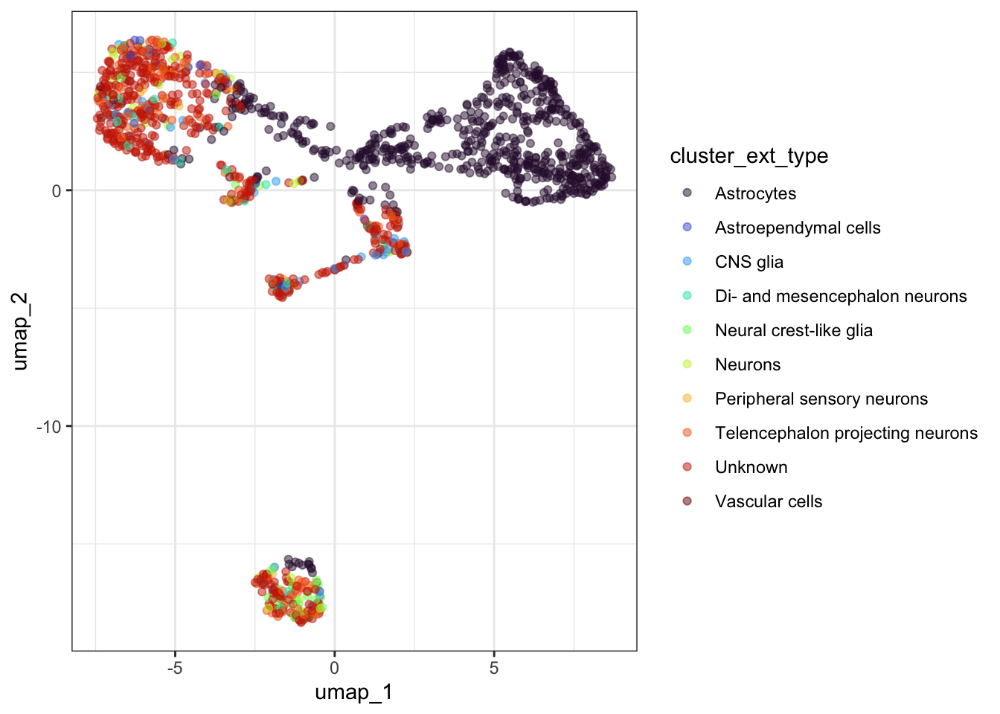
classified_umap_drop_unknowns_plot <-
koala_features_classified_df %>%
filter(cluster_ext_type != "Unknown") %>%
ggplot() +
geom_point(aes(x = umap_1, y = umap_2, color = cluster_ext_type), alpha = 0.5) +
theme_bw() +
scale_color_viridis_d(option = "H")
classified_umap_drop_unknowns_plot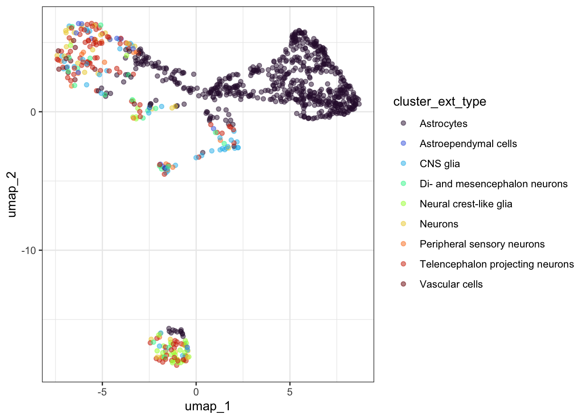
classified_umap_drop_unknowns_plot <-
koala_features_classified_df %>%
filter(cell_type != "Unknown") %>%
ggplot() +
geom_point(aes(x = umap_1, y = umap_2, color = cell_type), alpha = 0.5) +
theme_bw() +
scale_color_viridis_d(option = "H")
classified_umap_drop_unknowns_plot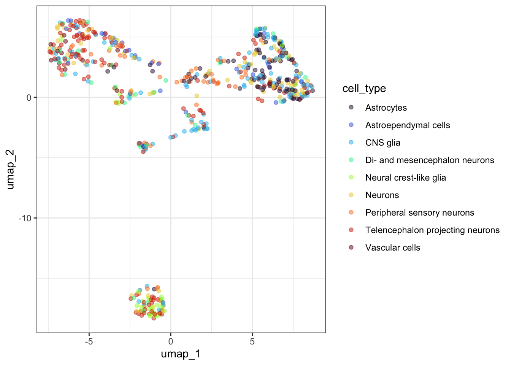
HTP GO Anlaysis for all 10 clusters
koala_umap_markers_for_GO <- koala_umap_markers %>%
group_by(cluster) %>% slice_max(n = 20, order_by = avg_log2FC)
koala_umap_markers_for_GO %>% ungroup() %>% dplyr::select("gene") %>% slice_tail(n = 167) %>% dput()structure(list(gene = c("Plpp1", "Kdr", "Flt4", "F8", "Fgd5",
"Fcgr2b", "Adgrl4", "Gm35696", "Uroc1", "Cxcl1", "Tedc2", "Hal",
"Grm8", "Gldc", "Hsd17b13", "Gcnt2", "BC024386", "Itih3", "Noct",
"Ftcd", "Osgin1", "Amdhd1", "Gls2", "Ctcflos", "Gm50136", "Gramd1c",
"Serpina10", "Vtn", "mt-Co1", "mt-Nd4", "Gm48099", "mt-Co2",
"mt-Nd1", "mt-Cytb", "Serpina1c", "Il31ra", "Ces1c", "Lars2",
"mt-Nd3", "mt-Atp6", "mt-Nd2", "Serpinf2", "Cmss1", "Cdk8", "Gm15564",
"mt-Co3", "Serpina1e", "Nr1h5", "Mamdc2", "Arvcf", "Ngf", "Ank3",
"Gpc6", "Pde3a", "Cacna2d1", "Bmp5", "Nrxn1", "Gucy1a1", "Fendrr",
"Abcc9", "Ntm", "Reln", "Pde1a", "Col5a1", "Carmn", "Nkain2",
"Lhfp", "Mup17", "mt-Cytb", "Il31ra", "mt-Atp8", "mt-Nd2", "mt-Nd4",
"mt-Co2", "Apoe", "Ppfia2", "mt-Co3", "mt-Atp6", "Pgrmc1", "Plxnc1",
"mt-Co1", "Dab2", "Erg", "mt-Nd5", "Chchd2", "Serpina3k", "Fcgr2b",
"Cyp2c38", "Gm13775", "Lhpp", "Slc1a2", "Rnf43", "Prodh", "Atf3",
"Glt1d1", "Cyp3a59", "Serpina6", "Glul", "Tox", "Slc16a10", "Klb",
"Slc25a25", "Irs1", "Tenm3", "Kank1", "Nr0b2", "Hnf4aos", "Adgre4",
"Fam129a", "Cd5l", "Adgb", "Bank1", "E230029C05Rik", "Clec4f",
"Slc8a1", "Entpd1", "Abr", "Fyb", "Gm26740", "Hdac9", "Madd",
"Unc93b1", "Elmo1", "Runx1", "Ctsc", "Slc40a1", "Cadm1", "Nuak1",
"Wnt9b", "Vwf", "Dnm3", "Mecom", "Eln", "Thsd7a", "Rspo3", "Pgm5",
"Unc13b", "Ptpn14", "Fbn1", "Zfp521", "Jam2", "Heg1", "Pecam1",
"Plxna4", "March3", "Myo1d", "Tbc1d4", "Bcl11b", "Atp8a2", "Gm2682",
"Themis", "Cd226", "Itk", "Skap1", "Ms4a4b", "Grap2", "Satb1",
"Kcnq5", "Ptpn22", "Pde7a", "Arhgap15", "Dock2", "Inpp4b", "Epsti1",
"Itgal", "Pik3cd", "Ripor2")), row.names = c(NA, -167L), class = c("tbl_df",
"tbl", "data.frame"))Seurat::FeaturePlot(koala_umap, features = c("Ptprb", "Stab2", "Lrmda", "Prkg1"), ncol = 2)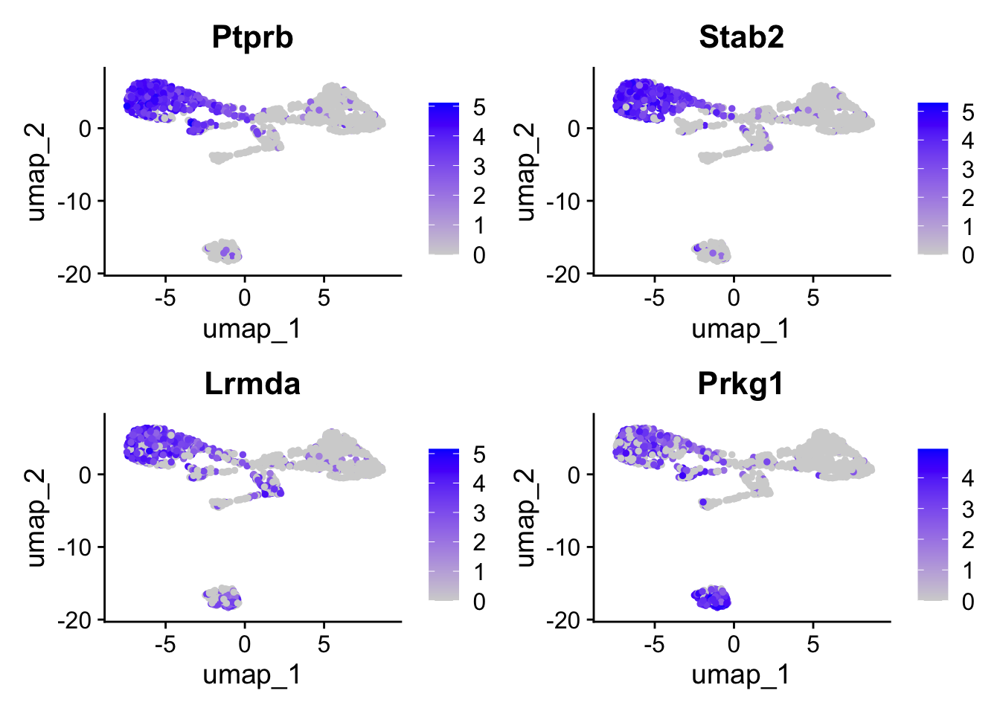